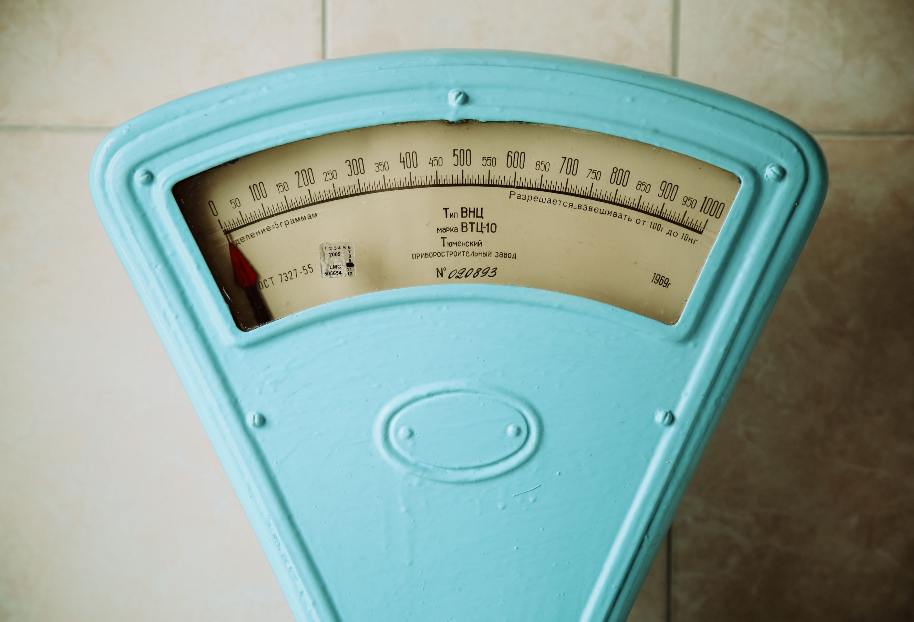
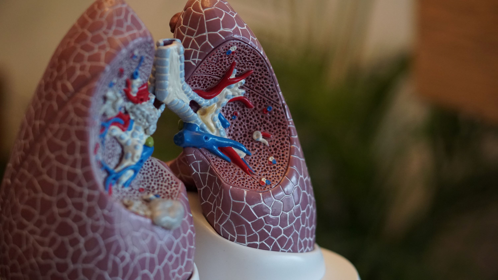

-
Improved Cardiovascular Health
Running is a fantastic cardiovascular exercise that strengthens your heart, improves blood circulation, and lowers the risk of heart disease and stroke.
-
Weight Management
Regular running can help you burn calories and maintain a healthy weight, making it an effective tool for weight management.
 -
Stress Relief
Running releases endorphins, which are natural mood elevators, providing stress relief and improving mental well-being.
-
Stronger Muscles and Bones
Running engages various muscle groups, contributing to increased muscle strength and bone density, reducing the risk of osteoporosis.

-
Enhanced Lung Capacity
Running challenges your respiratory system, leading to better lung capacity and improved breathing efficiency.
 -
Boosted Immune System
Regular running can strengthen the immune system, making your body more resistant to illnesses.